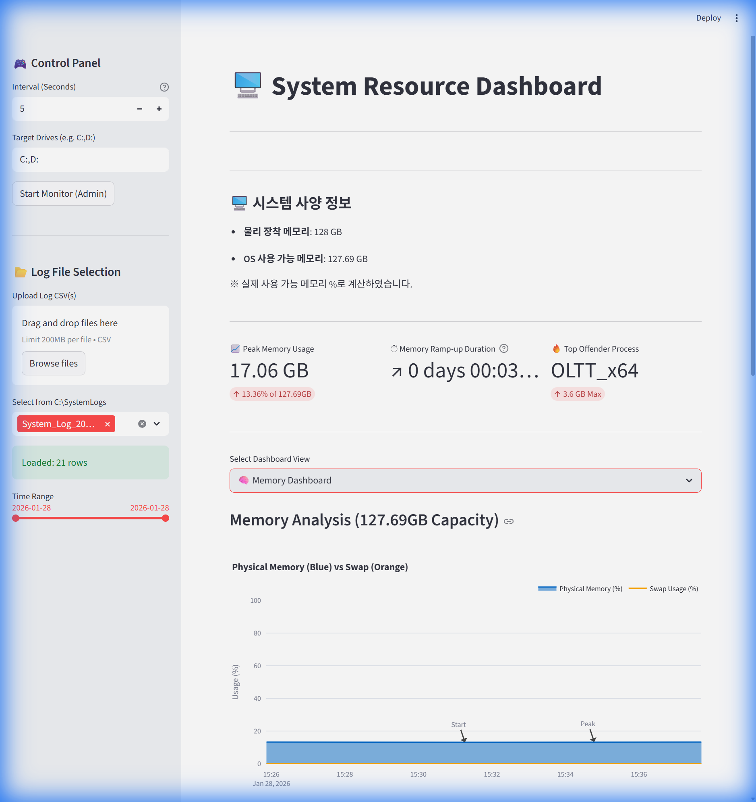

🖥️ PC 리소스 모니터 사용 매뉴얼
이 매뉴얼은 컴퓨터 자원(CPU, 메모리, 저장공간)을 실시간으로 확인하고 기록할 수 있는 System Resource Monitor 사용 방법을 안내합니다.
🚀 1. 프로그램 실행하기
-
Mirtec System Monitor 프로그램을 실행합니다.
- 최초 실행 시 관리자 권한으로 실행해야 합니다.
- 첫 실행 시 Streamlit이 이메일 주소를 요청하나 엔터 치면 무시하고 실행됩니다.
잠시 후 웹 브라우저에 대시보드 화면이 나타납니다.

🎮 2. 제어판 (Control Panel) 사용법
화면 왼쪽의 사이드바를 통해 모니터링 설정을 변경할 수 있습니다.
- Interval (Seconds): 데이터를 수집하는 간격입니다. (예: 5초 설정 시 5초마다 기록)
- Target Drives: 모니터링할 디스크 드라이브를 입력합니다. (예:
C:,D:) - Start Monitor (Admin): 이 버튼을 클릭하면 관리자 권한으로 실시간 데이터 수집이 시작됩니다. 수집된 데이터는
C:\SystemLogs폴더에 CSV 파일로 저장됩니다.
📂 3. 데이터 불러오기 (Log File Selection)
저장된 과거의 기록을 분석하고 싶을 때 사용합니다.
- Upload Log CSV(s): 본인이 직접 가지고 있는 로그 파일을 업로드할 수 있습니다.
- Select from C:\SystemLogs: 이전에 기록된 파일 목록에서 선택하여 불러올 수 있습니다.
- Time Range: 슬라이더를 조절하여 특정 시간대의 데이터만 집중적으로 볼 수 있습니다.
📈 4. 대시보드 활용 및 그래프 조작법
상단의 Select Dashboard View 메뉴를 통해 CPU, Memory, Storage 각각의 정보를 확인할 수 있습니다.
🔍 그래프 확대 및 축소 (Zoom)
모든 그래프 상단에 마우스를 올리면 나타나는 조작 아이콘을 통해 그래프를 자유롭게 제어할 수 있습니다.

| 아이콘 | 기능 설명 | 주요 사용법 |
|---|---|---|
| 📷 | Download plot as a png | 현재 보이는 그래프 화면을 이미지 파일로 저장합니다. |
| 🔍 | Zoom | 그래프의 특정 영역을 마우스로 드래그하여 확대합니다. |
| ➕ | Pan | 그래프 화면을 마우스로 잡고 사방으로 이동(이동)합니다. |
| ➕ | Zoom in | 그래프를 단계별로 확대합니다. |
| ➖ | Zoom out | 그래프를 단계별로 축소합니다. |
| ↔ | Autoscale | 데이터에 맞춰 축 범위를 자동으로 조절합니다. |
| 🏠 | Reset axes | 그래프를 초기 상태(원본 크기)로 되돌립니다. |
- 특정 영역 확대: 그래프 영역 안에서 마우스 왼쪽 버튼을 누른 채 드래그(Drag)하면 선택한 영역이 확대됩니다.
- 원래대로 되돌리기: 그래프 영역을 더블 클릭(Double Click)하거나
Reset axes아이콘을 누르면 원래 상태로 돌아옵니다. - 축 이동: 마우스 휠을 굴려 위아래로 이동하거나, 마우스로 그래프를 잡고 끌어 이동할 수 있습니다.
📊 엑셀(Excel) 데이터 내보내기
선택한 지표 데이터를 엑셀 파일로 저장하여 정밀한 분석이나 보고서 작성에 활용할 수 있습니다.

- 상단 메뉴에서 📈 Custom Graph를 선택합니다.
- 분석하고자 하는 지표(CPU, 사용량 등)를 선택하여 그래프를 띄웁니다.
- 하단의 📥 Excel Export Settings 섹션으로 이동합니다.
- Export Start Time에서 데이터 기록을 시작할 시점을 선택합니다.
- 📁 Download as Excel (.xlsx) 버튼을 클릭하면 엑셀 파일이 생성됩니다.
추가 정보
내보낸 파일에는 시간별 수치 데이터뿐만 아니라, 해당 시점의 상위 5개 메모리/디스크 점유 프로세스 정보도 함께 포함됩니다.
💡 주요 대시보드 설명
📊 CPU Dashboard
내 컴퓨터의 두뇌가 얼마나 바쁘게 일하는지, 열은 얼마나 나는지 확인합니다. 사용량이 급증하는 지점을 마우스 드래그로 확대해 보세요.

🧠 Memory Dashboard
어떤 프로그램이 메모리를 많이 차지하는지 'Top Offender' 정보를 통해 알 수 있습니다. 전체 메모리 용량 대비 현재 사용량을 한눈에 보여줍니다.

💾 Storage Dashboard
디스크 읽기/쓰기 속도가 얼마나 빠른지 실시간으로 보여줍니다. 대용량 파일 복사 시의 성능 변화를 관찰하기 좋습니다.
❓ 문제 해결 (Q&A)
- 로그 파일이 보이지 않아요:
C:\SystemLogs폴더가 생성되었는지, 관리자 권한으로 수집 버튼을 눌렀는지 확인해 보세요. - 그래프가 안 나와요: 왼쪽 사이드바에서 정확한 로그 파일을 선택했는지 확인해 주세요.